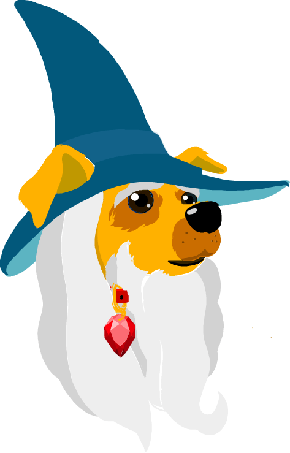

<ion-header no-border>
  <ion-navbar id="navbar-blue">
    <button ion-button menuToggle>
      <ion-icon name="menu" large></ion-icon>
    </button>

    <ion-title>
      
    </ion-title>

    <ion-buttons end>

      <button ion-button id="addpet" (tap)="centerMap()">Center Map</button>
    </ion-buttons>
  </ion-navbar>
</ion-header>

<ion-content fullscreen no-padding no-bounce>
  <!-- Main Map Display -->


  <div *ngIf="!auth" class="no-location-permissions" (tap)="openLocationSettings()">
    <div class="map-cover">
      </img-loader>
      <div>Huan tags can not be located while Location Permissions are disabled.</div>
      <div>Tap here to set 'Location' to 'Always'.</div>
    </div>
  </div>

  <div *ngIf="!bluetooth" class="no-location-permissions">
    <div class="map-cover">
      </img-loader>
      <div>Huan tags can not be located while Bluetooth is disabled.</div>
      <div>Please enable Bluetooth to proceed.</div>
    </div>
  </div>

  <div *ngIf="!monitoring_enabled" class="no-location-permissions">
    <div class="map-cover">
      </img-loader>
      <div>Pet Protection is disabled.</div>
    </div>
  </div>

  <div *ngIf="!online" class="no-location-permissions">
    <div class="map-cover">
      </img-loader>
      <div>Network Timeout. Attempting to reconnect...</div>
    </div>
  </div>


  <div #mainmap id="mainmap">
    <div *ngFor="let tag of (map$ | async); trackBy: trackByTags" id="shadow{{ tag.tagId }}" class="shadow"
      style="visibility: hidden" no-lines no-padding></div>

    <div *ngFor="let tag of (map$ | async); trackBy: trackByTags" id="pulse{{ tag.tagId }}" class="pulse"
      style="visibility: hidden" no-lines no-padding></div>

    <div *ngFor="let tag of (map_lost$ | async); trackBy: trackByTags" id="shadow{{ tag.tagId }}" class="shadow"
      style="visibility: hidden" no-lines no-padding></div>

    <div *ngFor="let tag of (map_lost$ | async); trackBy: trackByTags" id="pulse{{ tag.tagId }}" class="pulse"
      style="visibility: hidden" no-lines no-padding></div>

    <div *ngFor="let tag of (map_seen$ | async); trackBy: trackByTags" id="shadow{{ tag.tagId }}" class="shadow"
      style="visibility: hidden" no-lines no-padding></div>

    <div *ngFor="let tag of (map_seen$ | async); trackBy: trackByTags" id="pulse{{ tag.tagId }}" class="pulse"
      style="visibility: hidden" no-lines no-padding></div>

    <div *ngFor="let tag of (map$ | async); trackBy: trackByTags" id="info-window{{ tag.tagId }}" class="info-window"
      style="visibility: hidden" no-lines no-padding>
      <div class="info-window-title">{{ tag.name }}</div>
      <div class="info-window-subtitle">{{ getInfoWindowSubtitle(tag) }}</div>
    </div>


    <div *ngFor="let tag of (map_lost$ | async); trackBy: trackByTags" id="info-window{{ tag.tagId }}"
      class="info-window" style="visibility: hidden" no-lines no-padding>
      <div class="info-window-title">{{ tag.name }}</div>
      <div class="info-window-subtitle">{{ getInfoWindowSubtitle(tag) }}</div>
      <!-- <div class="info-window-subtitle">{{ getMarkedLostSubtitle(tag) }}</div> -->
    </div>

    <div *ngFor="let tag of (map_seen$ | async); trackBy: trackByTags" id="info-window{{ tag.tagId }}"
      class="info-window" style="visibility: hidden" no-lines no-padding>
      <div class="info-window-title">{{ tag.name }}</div>
      <div class="info-window-subtitle">{{ getInfoWindowSubtitle(tag) }}</div>
      <!-- <div class="info-window-subtitle">{{ getMarkedLostSubtitle(tag) }}</div> -->
    </div>

    <!-- <div *ngFor="let user of (active_users$ | async); trackBy: trackByTags" id="user{{ user.tagId }}" class="active-user" no-lines no-padding>
    </div> -->


  </div>
  <div *ngIf="markerProvider.isShowingSingleMarker()" id="single-marker-banner">
    <div (tap)="showAllPets()" id="single-marker-text">Map is currently in Single Marker Mode.<br>Tap here to show all
      markers.</div>
    <ion-item class="follow-marker" no-lines>
      <ion-label>Follow marker</ion-label>
      <ion-toggle [(ngModel)]="followSingleMarker"></ion-toggle>
    </ion-item>
  </div>

  <div *ngIf="home_alone_mode && bluetooth" id="home-alone-banner">
    <div id="home-alone-text">Home Alone Mode is enabled</div>
    <div id="home-alone-text">Automatic alerts will be sent to your emergency contacts.</div>
  </div>

  <div *ngIf="lost_pet_mode" id="lost-pet-mode-banner">
    <div id="lost-pet-mode-text"><strong>LOST PET MODE</strong>
      <br><br>You will be notified as soon as your pets' signal is detected by a
      fellow Huan user.<br><br>Tap here to share a Missing Pet Alert.<br>
      <button ion-button item-end (tap)="shareLostPet()" color="alert">Share</button>
    </div>
  </div>

  <div class="notification-flex" *ngIf="!lost_pet_mode && !markerProvider.isShowingSingleMarker()">

    <div *ngIf="account_info_missing" id="account-info-missing" class="hvr-pulse-grow" (tap)="gotoAccountPage()">
      <ion-icon id="account-info-missing-icon" name="person"></ion-icon>
      <div id="account-info-missing-text">Owner info missing!</div>
    </div>

    <div *ngIf="welcome_banner" id="welcome-banner" class="hvr-pulse-grow" (tap)="addTag()">
      <ion-icon id="welcome-banner-icon" name="paw"></ion-icon>
      <div id="welcome-banner-text">Welcome! Tap here to add your pets<br>and get tags.</div>
    </div>

    <div *ngIf="pack_leader" id="pack-leader">
      <ion-icon id="pack-leader-icon" name="star"></ion-icon>
      <div id="pack-leader-text">PACK LEADER</div>
    </div>

    <div *ngIf="review_banner" id="review-banner" class="hvr-pulse-grow" (tap)="review()">
      <ion-icon id="review-banner-icon" name="thumbs-up"></ion-icon>
      <div id="review-banner-text">Do you like using Huan?<br>Let us know!</div>
    </div>


    <div *ngIf="!auth" id="monitoring-disabled" (tap)="openLocationSettings()">
      <ion-icon id="location-disabled-icon" class="hvr-pulse-grow" name="navigate"></ion-icon>
      <div id="always-permission-text">'Always' Location Permission Disabled. <br>Pet Protection Inactive.</div>
    </div>

    <div
      *ngIf="auth && bluetooth && monitoring_enabled && nearby_users >= 10 && !markerProvider.isShowingSingleMarker() && !lost_pet_mode && online"
      id="nearby-users">
      
      <div id="nearby-users-text">
        You're protecting {{ nearby_users }} nearby pets.
        <div id="protection-level">
          {{ encouraging_message }}
        </div>
      </div>
    </div>

    <div
      *ngIf="auth && bluetooth && monitoring_enabled && number_of_tags <= large_number_of_tags && !markerProvider.isShowingSingleMarker() && !lost_pet_mode && online"
      id="monitoring-enabled">
      <ion-icon id="pet-protection-icon" name="checkmark-circle-outline"></ion-icon>
      <div id="pet-protection-text">
        Pet Protection Enabled
        <div id="protection-level">
          Nearby pets will be detected.
        </div>
        <!-- <div id="protection-level">
          <div *ngIf="protection_radius === -1">
            Protection Level: Unlimited
          </div>
          <div *ngIf="protection_radius === 2">
            Protection Level: 2 Mile radius
          </div>
          <div *ngIf="protection_radius === 30">
            Protection Level: 30 Mile radius
          </div>

          Level:
          <div [ngClass]=" { 
          'level-red': referral_score <= 1,
          'level-orange': referral_score == 2,
          'level-green': referral_score >= 3
        } " id="level"></div>
          <div [ngClass]=" { 
          'level-grey': referral_score < 2,
          'level-orange': referral_score == 2,
          'level-green': referral_score >= 3
        } " id="level"></div>
          <div [ngClass]=" {          
          'level-grey': referral_score < 3,
          'level-green': referral_score >= 3
        } " id="level"></div>
        </div> -->
      </div>
    </div>


    <!-- <div *ngIf="auth && !bluetooth" id="monitoring-disabled">
      <ion-icon id="bluetooth-disabled-icon" name="bluetooth"></ion-icon>
      <div id="pet-protection-text">Bluetooth Disabled.<br>Pet Protection Inactive.</div>
    </div> -->

    <!-- <div *ngIf="auth && !monitoring_enabled && bluetooth" id="monitoring-disabled">
      <ion-icon id="pet-protection-disabled-icon" name="alert"></ion-icon>
      <div id="pet-protection-text">Pet Protection Disabled</div>
    </div> -->

    <div *ngIf="auth && bluetooth && number_of_tags > large_number_of_tags && monitoring_enabled" id="updates-delayed"
      (tap)="sendInvite()">
      <ion-icon id="updates-delayed-icon" name="alert"></ion-icon>
      <div id="pet-protection-text">Large number of tags detected. Updates delayed.</div>
    </div>
  </div>
  <div id="message-bubble" class="speech-wrapper">
    <div class="bubble">
      <div class="txt">
        <p class="name">Incoming Huan Message</p>
        <p class="message">Hi! I'll help you find your dog if you ever need me to!</p>
        <!-- <span class="timestamp">Now</span> -->
      </div>
      <div class="bubble-arrow"></div>
    </div>
  </div>


  <div
    *ngIf="auth && bluetooth && monitoring_enabled && !markerProvider.isShowingSingleMarker() && !lost_pet_mode && !home_alone_mode"
    class="community" (tap)="sendInvite()">
    <div class="coverage">
      <div class="score">
        <!-- <progress-bar
          [progress]="progress"
          [color-degraded]="{
            '0': '#ff564f',
            '33': '#ffc42f',
            '66': '#2dd043'
          }"
        >
        </progress-bar>  -->
        <div>Map view shows your pets' last known location as detected by the Huan Network.</div>
        <div></div>
        <div class="tap-here">
          Tap here to share Huan and make your pet safer!
        </div>
      </div>
    </div>
  </div>


</ion-content>